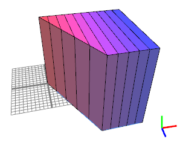

material.color attribute
float material.color.{r|g|b}
string material.color.rgb
The material.color shape attribute controls the diffuse color. In CGA, colors are always in non-linear sRGB.
Related
Examples
Rainbow building

Lot-->
extrude(20)
set(material.color.g, 0)
split(x) {
2 : set(material.color.r, split.index/split.total)
set(material.color.b, 1.0 - split.index/split.total)
X
}*
The split index is used to generate position dependent colors.